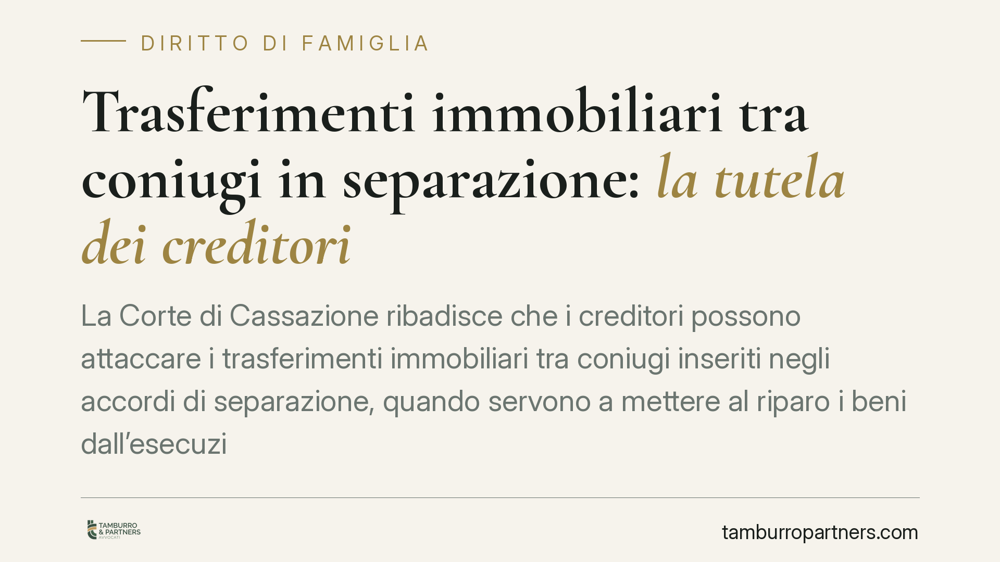

Trasferimenti immobiliari tra coniugi in separazione: la tutela dei creditori
La Corte di Cassazione ribadisce che i creditori possono attaccare i trasferimenti immobiliari tra coniugi inseriti negli accordi di separazione, quando servono a mettere al riparo i beni dall'esecuzione forzata. L'omologazione del giudice non protegge le clausole patrimoniali fittizie: restano aggredibili con l'azione di simulazione. Un principio che cambia le carte in tavola per chi vanta un credito.

Il problema: la separazione usata come scudo
Capita più spesso di quanto si creda. Un soggetto indebitato affronta una separazione consensuale e, all'interno dell'accordo, trasferisce al coniuge la casa o altri immobili. Formalmente è un atto lecito, inserito in un documento omologato dal tribunale. Nella sostanza, però, può nascondere un obiettivo diverso: svuotare il patrimonio prima che i creditori possano rivalersi.
La domanda per chi vanta un credito è chiara: quel trasferimento è intoccabile perché avvenuto in sede di separazione, oppure può essere impugnato?
Inquadramento normativo
La Corte di Cassazione ha chiarito che l'omologazione della separazione non blinda le clausole patrimoniali. L'omologa è un controllo di conformità agli interessi della famiglia e dei figli, non una validazione di ogni singola pattuizione economica tra i coniugi. Le clausole che trasferiscono beni hanno una loro autonomia: se sono viziate, il vizio non viene sanato dal decreto del giudice.
Da qui la conclusione. Quando il trasferimento è solo apparente – i coniugi in realtà non hanno voluto alcuno spostamento reale della proprietà, ma solo dare l'impressione all'esterno di averlo fatto – siamo di fronte a una simulazione assoluta, disciplinata dall'art. 1414 del codice civile. La norma stabilisce che il contratto simulato non produce effetti tra le parti. Il creditore, terzo rispetto all'accordo, può farne accertare la natura fittizia e trattare il bene come se non fosse mai uscito dal patrimonio del debitore.
Simulazione: cosa significa in concreto
È utile distinguere. Nella simulazione assoluta le parti fingono di stipulare un contratto che in realtà non vogliono affatto: il bene resta, di fatto, nella disponibilità del debitore. In questo caso il creditore chiede al giudice di dichiarare che l'atto è nullo e privo di effetti, così da poter aggredire l'immobile in sede esecutiva.
È una strada diversa dall'azione revocatoria (art. 2901 cod. civ.), che presuppone invece un trasferimento reale ma pregiudizievole. Nella simulazione si nega proprio che il passaggio di proprietà sia mai avvenuto sul piano della volontà effettiva.
Implicazioni pratiche per il creditore
Il principio ha ricadute concrete. Chi ha un credito verso un soggetto che si è separato e ha ceduto immobili al coniuge non deve considerare la partita chiusa. Se emergono elementi che indicano un accordo puramente apparente – ad esempio il debitore che continua a occupare la casa, a pagarne le spese, a comportarsi come proprietario – la clausola può essere impugnata.
L'onere della prova, però, è a carico del creditore, che deve dimostrare la natura fittizia dell'operazione. Trattandosi di terzo rispetto al contratto, la giurisprudenza gli consente prova anche per presunzioni e testimoni, senza i limiti probatori previsti tra le parti.
La tempestività è decisiva. Più il credito è documentato e anteriore al trasferimento, più solida sarà la posizione di chi agisce.
Cosa fare in concreto
- Verificate le date. Confrontate la scadenza del credito con la data dell'accordo di separazione e del trasferimento: uno spostamento di beni successivo al sorgere del debito è un segnale rilevante.
- Raccogliete indizi di apparenza. Documentate chi occupa l'immobile, chi paga utenze, imposte e spese condominiali, chi appare come referente presso terzi.
- Recuperate la documentazione ipocatastale. Richiedete visure e atti di trasferimento per ricostruire con precisione i passaggi di proprietà.
- Valutate la strada corretta. Simulazione o revocatoria rispondono a presupposti diversi: consigliamo un'analisi preliminare prima di avviare qualsiasi azione, per non compromettere la tutela.
- Non attendete l'esecuzione. Individuare per tempo un patrimonio in via di dispersione consente interventi cautelari a protezione del credito.
Conclusione
La separazione consensuale non è un rifugio automatico per chi vuole sottrarre beni ai creditori. L'omologazione non trasforma un atto fittizio in un atto valido. Il creditore attento dispone di strumenti per reagire, purché li utilizzi con la giusta base probatoria e nei tempi corretti.
---
Contributo informativo a cura di Tamburro & Partners - Avv. Giuseppe Tamburro. Non costituisce parere legale.
Ogni famiglia ha il suo equilibrio.
Separazione, divorzio, affidamento, assegno: se vuoi un confronto riservato su una specifica situazione, scrivi allo studio. Ti rispondiamo entro un giorno lavorativo.